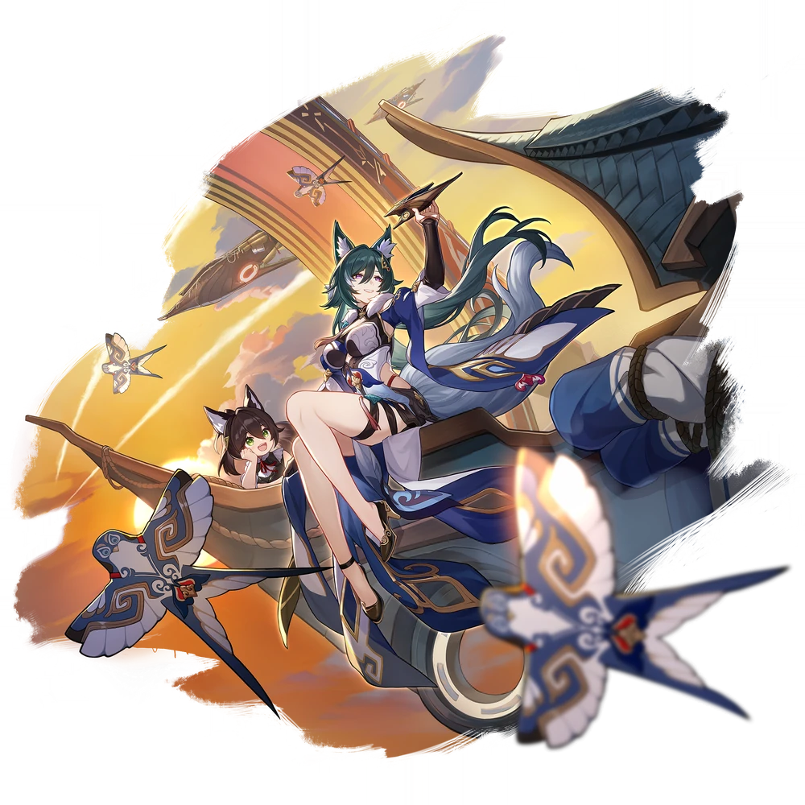
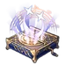

| Nome | Yukong |
|---|---|
| Elemento | Imaginario | Raridade | ✦ ✦ ✦ ✦ |
| Caminho | A Harmonia |
| Sexo | Femeea |
| Especie | Foxian |
| Facção | O Xianzhou Luofu (no perfil) Aliança de Xianzhou Comissão Sky-Faring | Mundo | O Xianzhou Loufu | Como obter | Memória completa de Xianzhou Estágio 1 de Forgotten Hall Qualquer Warp Banner (exceto Departure Warp ) | Data de Lançamento | 2023-06-28 | Adicionado pela primeira vez | Versão 0.90 Yukong foi adicionado como NPC. |
Ascensões e estatísticas
| Fase de Ascensão | Level | Base HP | Base ATK | Base DEF | Base SPD |
|---|---|---|---|---|---|
| 0✦ | 1/20 | 124 | 81 | 51 | 107 |
| 20/20 | 243 | 159 | 99 | 107 | |
| 1✦ | 20/30 | 293 | 191 | 119 | 107 |
| 30/30 | 355 | 232 | 145 | 107 | |
| 2✦ | 30/40 | 405 | 265 | 165 | 107 |
| 40/40 | 468 | 306 | 191 | 107 | |
| 3✦ | 40/50 | 517 | 338 | 211 | 107 |
| 50/50 | 580 | 379 | 237 | 107 | |
| 4✦ | 50/60 | 630 | 412 | 257 | 107 |
| 60/60 | 692 | 452 | 283 | 107 | |
| 5✦ | 60/70 | 742 | 485 | 303 | 107 |
| 70/70 | 804 | 526 | 328 | 107 | |
| 6✦ | 70/80 | 854 | 558 | 349 | 107 |
| 80/80 | 917 | 599 | 374 | 107 |
| Nível | Custo de Evolução | Materiais de Ascensão do Personagem | Materiais Necessários |
|---|---|---|---|
| 0 → 1 ✦ |  3,200 3,200 |
 4 4 |
|
| 1 → 2 ✦ | 6,400 |
8 |
|
| 2 → 3 ✦ | 12,800 |
 2 2 |
 5 5 |
| 3 → 4 ✦ | 32,000 |
5 |
8 |
| 4 → 5 ✦ | 64,400 |
15 |
 5 5 |
| 5 → 6 ✦ | 128,000 |
28 |
7 |
Habilidades de combate
| Icone | Tipo | Nome | Descrição | Marcação | Energia | Resistência DMG |
|---|---|---|---|---|---|---|
| ATK básico | atirador de flechas | Causa 50% –110% do ATK de Yukong como DMG Imaginário a um inimigo alvo. | Alvo único | Geração: 20 | 30 | |
| Skill | Encorajando Salvo | Obtém 2 pilhas de "Roaring Bowstrings" (até um máximo de 2 pilhas). Quando "Roaring Bowstrings" está ativo, o ATK de todos os aliados aumenta em 40% –88% e cada vez que o turno de um aliado termina, Yukong perde 1 pilha de "Roaring Bowstrings". Quando for o turno em que Yukong ganha "Roaring Bowstrings" usando Skill, "Roaring Bowstrings" não será removido. | Apoiar | Geração: 30 | ||
| Ultimate | Peneireiro de mergulho | Se "Roaring Bowstrings" estiver ativo em Yukong quando seu Ultimate for usado, aumenta adicionalmente a taxa CRIT de todos os aliados em 21% –29,4% e o CRIT DMG em 39% –70,2% . Ao mesmo tempo, causa DMG imaginário igual a 228% –410,4% do ATK de Yukong a um único inimigo. | Alvo único | Custo: 130 Geração: 5 | 90 | |
| Talento | Sete camadas, uma flecha | O ATK básico também causa DMG imaginário igual a 40% –88% do ATK de Yukong e aumenta o DMG de redução de resistência deste ataque em 100%. Este efeito pode ser ativado novamente em 1 turno(s). | Melhorar | |||
| Técnica | Perseguindo o Vento | Depois de usar sua técnica, Yukong entra no modo Sprint por 20 segundos. No modo Sprint, seu SPD de movimento aumenta em 35%, e Yukong ganha 2 pilhas de "Roaring Bowstrings" quando ela entra em batalha atacando inimigos. | Melhorar |
Eidolons
| Icone | Nome da habilidade | Nivel | Descrição |
|---|---|---|---|
| Marechal Aéreo | 1 | No início da batalha, aumenta a VEL de todos os aliados em 10% por 2 turno(s). | |
| Comando para o Céu | 2 | Quando a energia atual de qualquer aliado é igual ao seu limite de energia, Yukong regenera 5 energias adicionais. Este efeito só pode ser ativado uma vez para cada aliado. A contagem de gatilhos é reiniciada depois que Yukong lança seu Ultimate. | |
| Tiroteio Torrencial | 3 | Habilidade Nv. +2, até um máximo de Nv. 15. ATK Básico Nv. +1, até um máximo de Nv. 10. | |
| Ecos Zéfiros | 4 | Quando "Roaring Bowstrings" está ativo, Yukong causa 30% mais DMG aos inimigos. | |
| Pistoleiro de agosto | 5 | Nível final. +2, até um máximo de Nv. 15. Talento Nv. +2, até um máximo de Nv. 15. | |
| Trovão em Corda | 6 | Quando Yukong usa seu Ultimate, ela ganha imediatamente 1 pilha(s) de "Roaring Bowstrings". |
Traços
| Custo Total (1 → 6 para rastreamento de ATK básico) | ||||||
|---|---|---|---|---|---|---|
| 192.000 |
4 |
5 |
5 |
2 | 6 | 8 |
| Custo total (1 → 10 para um rastreamento) | ||||||||
|---|---|---|---|---|---|---|---|---|
| 522.000 |
6 |
10 |
5 |
2 | 12 | 23 | .webp) 3 3 |
 1 1 |